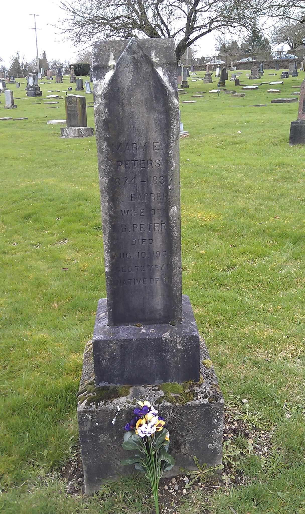
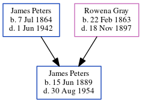

Margaret Peters (née Barber) 1860 - 1935
[ Home ] | [ Calendar ] | [ Surnames Index ] | [ Errors ] | [ Family History ]Margaret Barber, the wife of James Bedford Peters (the third cousin twice-removed on the father's side of Nigel Horne), was born in Nassagaweya, Halton, Ontario, Canada on 7 Sept 18601,2,3 and married James (with whom she had 1 child, ) in Vancouver, British Columbia, Canada on 30 Aug 19054.
During her life, she was living in New Westminster, British Columbia, Canada in 19111.
She died on 10 Aug 1935 in New Westminster2,3 and was buried there at Fraser Cemetery after 10 Aug 19353.
Citations
- 1911 Census of Canada Online publication - Provo, UT, USA: Ancestry.com Operations Inc, 2006. .Original data - Library and Archives Canada. Census of Canada, 1911. Ottawa, Ontario, Canada: Library and Archives Canada, 2007. http://www.collectionscanada.gc.ca/databases/census-19 (Marital Status: Married; Relation to Head of House: Wife)
- British Columbia, Canada, Death Index, 1872-1990 Ancestry.com Operations Inc
- Canada, Find A Grave Index, 1600s-Current Ancestry.com Operations, Inc.
- British Columbia, Canada, Marriage Index, 1872-1935 Ancestry.com Operations Inc
- Canada Census 1911 - Findmypast (was the wife of the head of the household)
Media
Margaret Barber - gravestone

Canada Census 1911 Transcription - CAN-CENSUS-1911-00517264
Canada Census 1911 - CAN/CENSUS/1911/00517265
Family Tree
Map
Generated by ged2site. Last updated on Jul 3, 2024
Known Issues
No records of living with anyone
Adding date of burial as 'aft 10 Aug 1935'